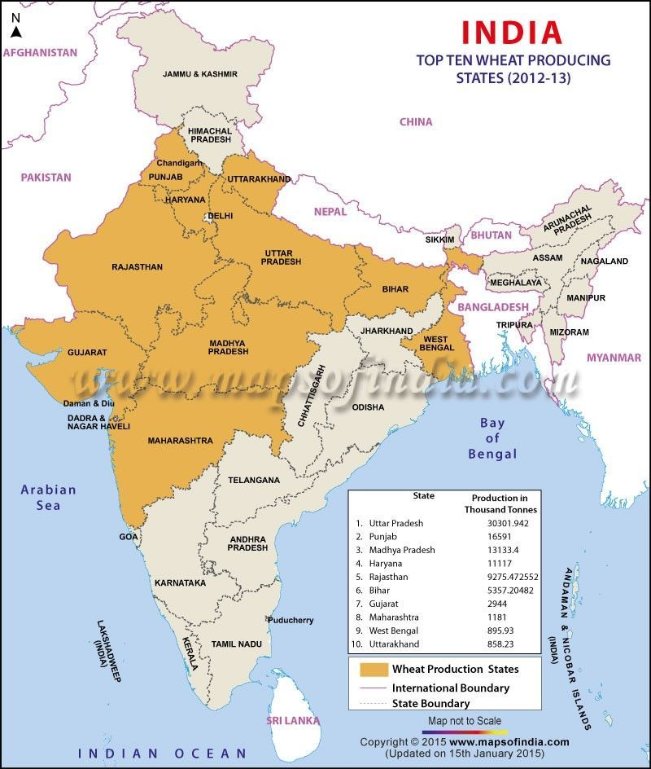

It is the 2nd most important food crop in India.It is a Rabi crop. India stands second in production of wheat worldwide. It is more flexible in terms of climactic and other conditions of growth. Type of Crop: :Rabi Varieties:: Kalyan Sona, Sonalika, Heera Temperature: :17-20 °C Rainfall:: 20-100 cm (ideal ~75 cm) Soil Type: :Clay loam, Sandy loam Major Producers:: Uttar Pradesh, Punjab, Madhya Pradesh, Haryana, Rajasthan, Bihar, Gujarat, Maharashtra, West Bengal, Uttarakhand Highest Producing State:: Uttar Pradesh Highest per Hectare Yield:: Punjab Research Centres:: Karnal, Haryana Highest Producing Country: China 